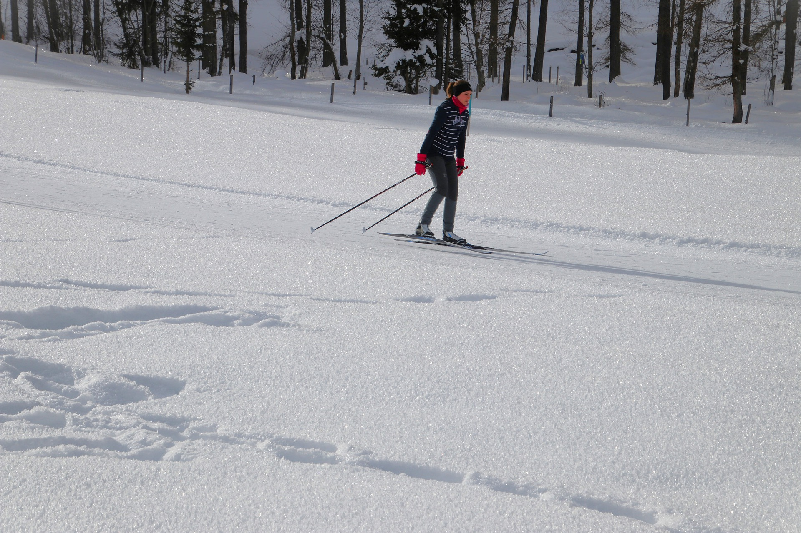
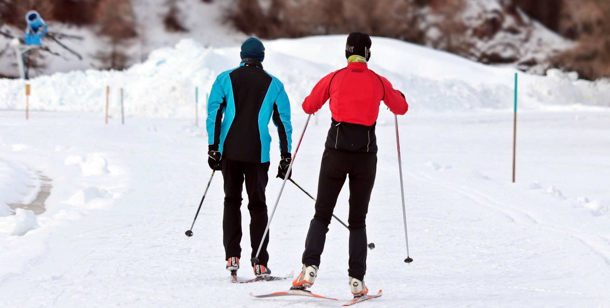

Hiihdon alkuperä

Hiihto on ikivanha liikkumismuoto, jossa liu'utaan suksilla eteenpäin lumella, useimmiten sauvoja apuna käyttäen. Hiihtäviä hahmoja on kaiverrettu kiviin jo 6000 vuotta sitten Pohjois-Norjassa ja Venäjällä ja muinaisten suksien sekä sauvojen palasia on löydetty sadoittain Skandinavian ja Venäjän soista. Hiihto on alun perin kehitetty helpottamaan liikkumista lumisessa maastossa ja entisaikoina sukset olivatkin välttämättömiä kulkuvälineitä hankien peittämällä maalla. Tyypillinen muinaissuksi oli noin 160 senttimetriä pitkä ja 10-15 senttimetriä leveä. Sen kärki kääntyi ylöspäin, ja jalkine kiinnitettiin keskikohtaan. Tällaisia sukset olivat tuhansien vuosien ajan. Vauhtia otettiin yhdellä pitkällä sauvalla, jota käytettiin myös keihäänä. Kahden suksisauvan käyttö yleistyi vasta 1900-luvun alussa.
Koko kansan harrastukseksi
Hiihto alkoi muuttua hyötyliikunnasta ajanvietteeksi 1800-luvulla niin pohjoisessa kuin Euroopassakin. Hiihdosta tuli vauraan kaupunkiporvariston harrastus. Samalla hiihtovälineet kehittyivät ja saivat lopullisen muotonsa, ja kilpailusäännöt standardisoitiin. Suomessa 20-luvulta alkaen hiihtämistä mainostettiin terveellisenä harrastuksena ja nautintona.Lauri ”Tahko” Pihkalan ehdotuksesta perustettiin Suomen Latu -järjestö. Suomen Latu -nimi tarkoitti hiihtämisen edistämisen lisäksi uusien latujen aukomista kansanurheilulle ilman kilpailua. Samaan aikaan kouluhallituksen tavoite oli opettaa jokainen suomalainen lapsi hiihtämään. Koulussa hiihdettiin koko talvi; välitunneilla hiihdettiin, laskettiin mäkeä ja hypättiin hyppyristä ja maaseudulla taitettiin koulumatkatkin suksilla. Lisäksi 30-luvulla koululaiset saivat hiihtoloman, koska liian opiskelun pelättiin tekevän kasvavista nuorista velttoja ja huonokuntoisia. Laturetkeily alkoi 50-luvulla ja se kasvatti suosiotaan seuraavilla vuosikymmenillä. Laturetki on urheilutapahtuma, jossa kuntohiihtäjät ja usein myös kilpailijat hiihtävät tavallista pidemmän reitin. Ensimmäisiä suuria laturetkiä olivat Oulun Tervahiihto ja Pirkan hiihto.Vuonna 1974 järjestettiin Finlandia-hiihto ensimmäisen kerran. 75 kilometrin matkalle lähti noin 1500 hiihtäjää.
Luistelytyylin kehitys
kahden suksen luistelutyyli on melko uusi keksintö, sillä luistelupotku yleistyi vasta 1970-luvulla ylipitkissä hiihtokilpailuissa. Alkuun luistelupotkua käytettiin toispuoleisesti tuomaan pitoa hiihtoon. Julkiseen keskusteluun luistelupotku tuli ensimmäisellä virallisella hiihdon maailmancupin kaudella 1982. Tuolloin latu-urat olivat kapeita ja usein latu oli vedetty keskelle uraa, joten potku oli puolitehoinen. Sarajevon olympialaisissa 1984 luistelupotkua käytettiin melko yleisesti. Kansainvälisessä hiihtoliitossa (FIS) oltiin luisteluhiihdon suhteen sekavissa tunnelmissa. Seefeldin MM-kisoissa 30 kilometrillä avausmatkalla laduille oli pysytetty muoviaitoja, joilla pyrittiin estämään luistelupotkun käyttö. Saman vuoden keväänä pidetyssä kongressissa FIS melko yllättäen päätti eriyttää toisistaan vapaan ja perinteisen hiihtotavan. Näin syntyi virallisesti luisteluhiihtotyyli.
Nykypäivä
Nykyään hiihto on suosittu liikunta- ja urheilumuoto, ja se on jakaantunut moneen lajiin, kuten maastohiihtoon, alppihiihtoon, freestylehiihtoon ja mäkihyppyyn. Maastohiihto ( ts. murtomaahiihto tai usein pelkkä hiihto) on tasamaalla, mäkisessä maastossa tai järven jäällä tapahtuva hiihtomuoto, josta käytännössä kaikki hiihtolajit ovat kehittyneet. Maastohiihdossa hiihtäjä liikkuu usein valmiilla ladulla suksia ja sauvoja käyttäen, mutta myös umpihangella voi hiihtää.